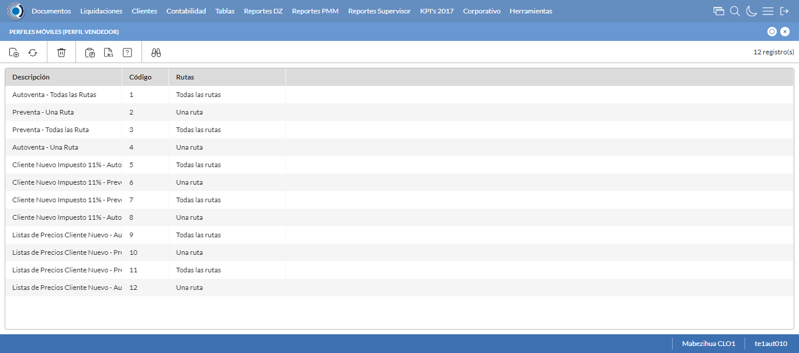
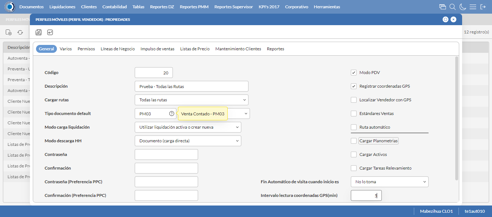
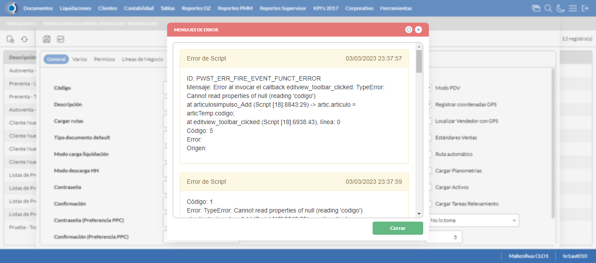
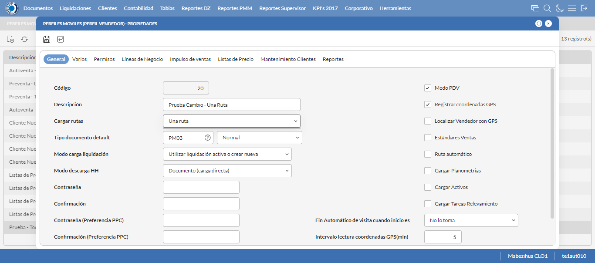
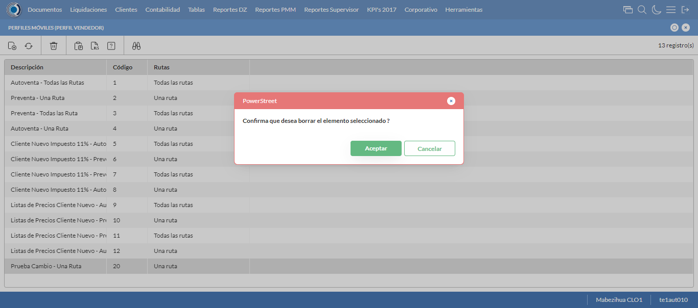

Desarrollado por : Area de Testing PWST
Fecha y hora de inicio : 2023-03-03 17:37:09
Duracion : 0:02:08.105095
Resultado : Total 8，Correctos 7 ，Errores 1 ，Taza de resultado 87.50%
Resumen 87.50% Errores 1 Fallidos 0 Correctos 7 Test realizados 8
| Caso de Prueba | Total | Correctos | Fallido | Error | Detalles | Captura del error |
| PerfilesMoviles.Test: Escenario 1 de Perfiles Moviles | 8 | 7 | 0 | 1 | Detalles | |
test |
ft1_1: 2023-03-03 17:37:11,112 - root - INFO - Se abre el chrome
2023-03-03 17:37:13,038 - root - INFO - Entra a la URL
2023-03-03 17:37:13,165 - root - INFO - Maximiza la pantalla
Traceback (most recent call last):
File "C:\Users\gerar\AppData\Local\Programs\Python\Python311\Lib\site-packages\selenium\webdriver\remote\switch_to.py", line 88, in frame
frame_reference = self._driver.find_element(By.ID, frame_reference)
^^^^^^^^^^^^^^^^^^^^^^^^^^^^^^^^^^^^^^^^^^^^^^^^^
File "C:\Users\gerar\AppData\Local\Programs\Python\Python311\Lib\site-packages\selenium\webdriver\remote\webdriver.py", line 861, in find_element
return self.execute(Command.FIND_ELEMENT, {"using": by, "value": value})["value"]
^^^^^^^^^^^^^^^^^^^^^^^^^^^^^^^^^^^^^^^^^^^^^^^^^^^^^^^^^^^^^^^^^
File "C:\Users\gerar\AppData\Local\Programs\Python\Python311\Lib\site-packages\selenium\webdriver\remote\webdriver.py", line 444, in execute
self.error_handler.check_response(response)
File "C:\Users\gerar\AppData\Local\Programs\Python\Python311\Lib\site-packages\selenium\webdriver\remote\errorhandler.py", line 249, in check_response
raise exception_class(message, screen, stacktrace)
selenium.common.exceptions.NoSuchElementException: Message: no such element: Unable to locate element: {"method":"css selector","selector":"[id="mainFrame"]"}
(Session info: chrome=110.0.5481.178)
Stacktrace:
Backtrace:
(No symbol) [0x007F37D3]
(No symbol) [0x00788B81]
(No symbol) [0x0068B36D]
(No symbol) [0x006BD382]
(No symbol) [0x006BD4BB]
(No symbol) [0x006F3302]
(No symbol) [0x006DB464]
(No symbol) [0x006F1215]
(No symbol) [0x006DB216]
(No symbol) [0x006B0D97]
(No symbol) [0x006B253D]
GetHandleVerifier [0x00A6ABF2+2510930]
GetHandleVerifier [0x00A98EC1+2700065]
GetHandleVerifier [0x00A9C86C+2714828]
GetHandleVerifier [0x008A3480+645344]
(No symbol) [0x00790FD2]
(No symbol) [0x00796C68]
(No symbol) [0x00796D4B]
(No symbol) [0x007A0D6B]
BaseThreadInitThunk [0x76857D69+25]
RtlInitializeExceptionChain [0x77C2BB9B+107]
RtlClearBits [0x77C2BB1F+191]
During handling of the above exception, another exception occurred:
Traceback (most recent call last):
File "C:\Users\gerar\AppData\Local\Programs\Python\Python311\Lib\site-packages\selenium\webdriver\remote\switch_to.py", line 91, in frame
frame_reference = self._driver.find_element(By.NAME, frame_reference)
^^^^^^^^^^^^^^^^^^^^^^^^^^^^^^^^^^^^^^^^^^^^^^^^^^^
File "C:\Users\gerar\AppData\Local\Programs\Python\Python311\Lib\site-packages\selenium\webdriver\remote\webdriver.py", line 861, in find_element
return self.execute(Command.FIND_ELEMENT, {"using": by, "value": value})["value"]
^^^^^^^^^^^^^^^^^^^^^^^^^^^^^^^^^^^^^^^^^^^^^^^^^^^^^^^^^^^^^^^^^
File "C:\Users\gerar\AppData\Local\Programs\Python\Python311\Lib\site-packages\selenium\webdriver\remote\webdriver.py", line 444, in execute
self.error_handler.check_response(response)
File "C:\Users\gerar\AppData\Local\Programs\Python\Python311\Lib\site-packages\selenium\webdriver\remote\errorhandler.py", line 249, in check_response
raise exception_class(message, screen, stacktrace)
selenium.common.exceptions.NoSuchElementException: Message: no such element: Unable to locate element: {"method":"css selector","selector":"[name="mainFrame"]"}
(Session info: chrome=110.0.5481.178)
Stacktrace:
Backtrace:
(No symbol) [0x007F37D3]
(No symbol) [0x00788B81]
(No symbol) [0x0068B36D]
(No symbol) [0x006BD382]
(No symbol) [0x006BD4BB]
(No symbol) [0x006F3302]
(No symbol) [0x006DB464]
(No symbol) [0x006F1215]
(No symbol) [0x006DB216]
(No symbol) [0x006B0D97]
(No symbol) [0x006B253D]
GetHandleVerifier [0x00A6ABF2+2510930]
GetHandleVerifier [0x00A98EC1+2700065]
GetHandleVerifier [0x00A9C86C+2714828]
GetHandleVerifier [0x008A3480+645344]
(No symbol) [0x00790FD2]
(No symbol) [0x00796C68]
(No symbol) [0x00796D4B]
(No symbol) [0x007A0D6B]
BaseThreadInitThunk [0x76857D69+25]
RtlInitializeExceptionChain [0x77C2BB9B+107]
RtlClearBits [0x77C2BB1F+191]
During handling of the above exception, another exception occurred:
Traceback (most recent call last):
File "C:\xampp\htdocs\versiones\automatizaciones\AutoPWST\01PM\testCase\PerfilesMoviles.py", line 30, in test
self.driver.switch_to.frame("mainFrame")
File "C:\Users\gerar\AppData\Local\Programs\Python\Python311\Lib\site-packages\selenium\webdriver\remote\switch_to.py", line 93, in frame
raise NoSuchFrameException(frame_reference)
selenium.common.exceptions.NoSuchFrameException: Message: mainFrame
|
|
||||
test_000: Ingresa a la base de datos |
pt1_2: 2023-03-03 17:37:16,274 - root - INFO - Escribe el usuario
2023-03-03 17:37:16,377 - root - INFO - Escribe la contraseña
2023-03-03 17:37:16,474 - root - INFO - Se dio clic en el boton ingresar
2023-03-03 17:37:18,186 - root - INFO - Ejecutar Enterprise
2023-03-03 17:37:22,228 - root - INFO - Cambia entre pestañas
|
|
||||
test_001: Abre menu y ejecuta pantalla |
pt1_3: 2023-03-03 17:37:36,799 - root - INFO - Abre la pantalla de Perfiles Moviles
2023-03-03 17:37:37,355 - root - INFO - La pantalla ejecutada es Perfiles Moviles
2023-03-03 17:37:37,356 - root - INFO - Captura: C:\xampp\htdocs\versiones\automatizaciones\AutoPWST\01PM\report\img screen：20230303_17_37_37.png
2023-03-03 17:37:37,524 - root - INFO - Se presiona el boton 'Nuevo', para crear un nuevo registro.
|
 | ||||
test_002: Abre la ventana de nuevo y crear un registro |
pt1_4: 2023-03-03 17:37:38,079 - root - INFO - Se abrio la pantalla para el ingreso de un registro nuevo.
2023-03-03 17:37:38,143 - root - INFO - Ingresa el codigo del nuevo registro
2023-03-03 17:37:38,266 - root - INFO - Ingresa la Descripcion del nuevo registro
2023-03-03 17:37:38,640 - root - INFO - Se selecciono la opción Todas las Rutas
2023-03-03 17:37:38,733 - root - INFO - Ingresa el Tipo documento default del nuevo registro
2023-03-03 17:37:39,213 - root - INFO - Se selecciono la opción Normal
2023-03-03 17:37:39,605 - root - INFO - Se selecciono el registro de Modo carga liquidación
2023-03-03 17:37:40,244 - root - INFO - Se selecciono la opción Documento (carga directa)
2023-03-03 17:37:40,320 - root - INFO - Se dió click en el checkbox Modo PDV
2023-03-03 17:37:40,405 - root - INFO - Se dió click en el checkbox Registrar coordenadas GPS
2023-03-03 17:37:40,772 - root - INFO - Se dió click en la opción No lo toma
2023-03-03 17:37:40,867 - root - INFO - Ingresa el Intervalo lectura coordenadas GPS(min) del nuevo registro
2023-03-03 17:37:40,867 - root - INFO - Captura: C:\xampp\htdocs\versiones\automatizaciones\AutoPWST\01PM\report\img screen：20230303_17_37_40.png
2023-03-03 17:37:43,074 - root - INFO - Se hace el cambio de pestaña Varios para continuar con el registro nuevo
2023-03-03 17:37:43,156 - root - INFO - Se dió click en el checkbox Cargar resumen de cuentas únicamente del vendedor de la ruta
2023-03-03 17:37:43,244 - root - INFO - Se dió click en el checkbox Verificar límite de crédito
2023-03-03 17:37:43,331 - root - INFO - Se dió click en el checkbox Verificar opción 'guardar como' del tipo de documento
2023-03-03 17:37:43,402 - root - INFO - Se dió click en el checkbox Permitir Pagos
2023-03-03 17:37:44,491 - root - INFO - Se dió click en el botón espacio para mover la pantalla hacía abajo
2023-03-03 17:37:45,878 - root - INFO - Se selecciono el registro de Disco de Datos
2023-03-03 17:37:46,275 - root - INFO - Se dió click en la opción Autoventa
2023-03-03 17:37:46,352 - root - INFO - Se dió click en el checkbox Enviar documentos de inmediato al servidor.
2023-03-03 17:37:46,422 - root - INFO - Se hace el cambio a la pestaña Permisos para continuar con el registro nuevo
2023-03-03 17:37:47,002 - root - INFO - Se presiona el boton 'Nuevo de la pestaña Permiso' , para crear un nuevo registro.
2023-03-03 17:37:48,477 - root - INFO - Se dió click en la opción Inihibir Georeferenciación
2023-03-03 17:37:48,553 - root - INFO - Se presiona el boton 'Guardar de la pestaña Permiso', para guardar el registro.
2023-03-03 17:37:48,754 - root - INFO - Se presiona el boton 'Nuevo de la pestaña Permiso' , para crear un nuevo registro.
2023-03-03 17:37:49,642 - root - INFO - Se dió click en la opción Anular Documentos
2023-03-03 17:37:49,715 - root - INFO - Se presiona el boton 'Guardar de la pestaña Permiso', para guardar el registro.
2023-03-03 17:37:49,981 - root - INFO - Se hace el cambio a la pestaña Lineas de Negocio para continuar con el registro nuevo
2023-03-03 17:37:50,572 - root - INFO - Se presiona el boton 'Nuevo de la pestaña Permiso' , para crear un nuevo registro.
2023-03-03 17:37:52,054 - root - INFO - Se selecciono el registro de Linea de negocio
2023-03-03 17:37:52,254 - root - INFO - Se presiona el boton 'Guardar de la pestaña Linea de Negocio', para guardar el registro.
2023-03-03 17:37:52,514 - root - INFO - Se presiona el boton 'Nuevo de la pestaña Permiso' , para crear un nuevo registro.
2023-03-03 17:37:53,993 - root - INFO - Se selecciono el registro de Linea de negocio
2023-03-03 17:37:54,202 - root - INFO - Se presiona el boton 'Guardar de la pestaña Linea de Negocio', para guardar el registro.
2023-03-03 17:37:54,426 - root - INFO - Se presiona el boton 'Nuevo de la pestaña Permiso' , para crear un nuevo registro.
2023-03-03 17:37:55,895 - root - INFO - Se selecciono el registro de Linea de negocio
2023-03-03 17:37:56,126 - root - INFO - Se presiona el boton 'Guardar de la pestaña Linea de Negocio', para guardar el registro.
2023-03-03 17:37:56,375 - root - INFO - Se hace el cambio a la pestaña Impulso Ventas para continuar con el registro nuevo
2023-03-03 17:37:56,978 - root - INFO - Se presiona el boton 'Nuevo de la pestaña Impulso de Ventas' , para crear un nuevo registro.
2023-03-03 17:37:57,565 - root - INFO - Ingresa el Articulo del nuevo registro
2023-03-03 17:37:59,670 - root - INFO - Se presiona el boton 'Guardar de la pestaña Impulso de Ventas', para guardar el registro.
2023-03-03 17:38:01,709 - root - INFO - Se presiona el boton 'Nuevo de la pestaña Impulso de Ventas' , para crear un nuevo registro.
2023-03-03 17:38:02,327 - root - INFO - Ingresa el Articulo del nuevo registro
2023-03-03 17:38:04,502 - root - INFO - Se presiona el boton 'Guardar de la pestaña Impulso de Ventas', para guardar el registro.
2023-03-03 17:38:06,555 - root - INFO - Se presiona el boton 'Nuevo de la pestaña Impulso de Ventas' , para crear un nuevo registro.
2023-03-03 17:38:07,174 - root - INFO - Ingresa el Articulo del nuevo registro
2023-03-03 17:38:09,326 - root - INFO - Se presiona el boton 'Guardar de la pestaña Impulso de Ventas', para guardar el registro.
2023-03-03 17:38:11,368 - root - INFO - Se presiona el boton 'Nuevo de la pestaña Impulso de Ventas' , para crear un nuevo registro.
2023-03-03 17:38:12,002 - root - INFO - Ingresa el Articulo del nuevo registro
2023-03-03 17:38:14,154 - root - INFO - Se presiona el boton 'Guardar de la pestaña Impulso de Ventas', para guardar el registro.
2023-03-03 17:38:16,202 - root - INFO - Se presiona el boton 'Nuevo de la pestaña Impulso de Ventas' , para crear un nuevo registro.
2023-03-03 17:38:16,830 - root - INFO - Ingresa el Articulo del nuevo registro
2023-03-03 17:38:19,000 - root - INFO - Se presiona el boton 'Guardar de la pestaña Impulso de Ventas', para guardar el registro.
2023-03-03 17:38:21,086 - root - INFO - Se hace el cambio a la pestaña Mantenimiento Clientes para continuar con el registro nuevo
2023-03-03 17:38:21,681 - root - INFO - Se dió click en el checkbox Permiso agregar nuevos clientes
2023-03-03 17:38:21,756 - root - INFO - Se dió click en el checkbox Permiso modificar clientes existentes
2023-03-03 17:38:22,711 - root - INFO - Se selecciono el registro de Ruta Referencia
2023-03-03 17:38:22,897 - root - INFO - Se dió click en el checkbox Clasificación 1
2023-03-03 17:38:23,008 - root - INFO - Se dió click en el checkbox Clasificación 2
2023-03-03 17:38:23,101 - root - INFO - Se dió click en el checkbox Clasificación 3
2023-03-03 17:38:23,195 - root - INFO - Se dió click en el checkbox Colonia
2023-03-03 17:38:23,346 - root - INFO - Se dió click en el checkbox Codigo Postal
2023-03-03 17:38:23,443 - root - INFO - Se dió click en el checkbox Direccion
2023-03-03 17:38:23,540 - root - INFO - Se dió click en el checkbox Entorno PDV
2023-03-03 17:38:23,653 - root - INFO - Se dió click en el checkbox Esquina 1
2023-03-03 17:38:23,769 - root - INFO - Se dió click en el checkbox Esquina 2
2023-03-03 17:38:23,860 - root - INFO - Se dió click en el checkbox Paises
2023-03-03 17:38:24,006 - root - INFO - Se dió click en el checkbox Departamento
2023-03-03 17:38:24,096 - root - INFO - Se dió click en el checkbox Localidad
2023-03-03 17:38:24,222 - root - INFO - Se da clic en el boton Guardar; se debe crear un nuevo registro.
|
 | ||||
test_003: Repite el Registro |
pt1_5: 2023-03-03 17:38:24,758 - root - INFO - Se presiona el boton 'Refrescar', para crear un nuevo registro igual al anterior.
2023-03-03 17:38:26,822 - root - INFO - Se presiona el boton 'Nuevo', para crear un nuevo registro igual al anterior.
2023-03-03 17:38:27,414 - root - INFO - Se abrio la pantalla para el ingreso de un registro nuevo.
2023-03-03 17:38:27,470 - root - INFO - Ingresa el codigo del nuevo registro
2023-03-03 17:38:27,584 - root - INFO - Ingresa la Descripcion del nuevo registro
2023-03-03 17:38:27,960 - root - INFO - Se selecciono la opción Todas las Rutas
2023-03-03 17:38:28,071 - root - INFO - Ingresa el Tipo documento default del nuevo registro
2023-03-03 17:38:28,572 - root - INFO - Se selecciono la opción Normal
2023-03-03 17:38:28,984 - root - INFO - Se selecciono el registro de Modo carga liquidación
2023-03-03 17:38:29,371 - root - INFO - Se selecciono la opción Documento (carga directa)
2023-03-03 17:38:29,463 - root - INFO - Se dió click en el checkbox Modo PDV
2023-03-03 17:38:29,539 - root - INFO - Se dió click en el checkbox Registrar coordenadas GPS
2023-03-03 17:38:29,930 - root - INFO - Se dió click en la opción No lo toma
2023-03-03 17:38:30,032 - root - INFO - Ingresa el Intervalo lectura coordenadas GPS(min) del nuevo registro
2023-03-03 17:38:32,110 - root - INFO - Se da clic en el boton Guardar; NO se debe crear un nuevo registro.
2023-03-03 17:38:34,234 - root - INFO - Se da clic en el boton del mensaje de registro duplicado
2023-03-03 17:38:36,236 - root - INFO - Captura: C:\xampp\htdocs\versiones\automatizaciones\AutoPWST\01PM\report\img screen：20230303_17_38_36.png
2023-03-03 17:38:36,429 - root - INFO - Se presiona el boton 'Cerrar', para cerrar el mensaje de duplicidad de llave primaria
2023-03-03 17:38:36,701 - root - INFO - Se presiona el boton 'Cerrar', para cerrar la ventana
|
 | ||||
test_004: Modificar el registro |
pt1_6: 2023-03-03 17:38:36,942 - root - INFO - Se presiona el boton 'Refrescar', para proceder a modificar el registro.
2023-03-03 17:38:39,525 - root - INFO - Se da clic en el registro creado, para proceder a modificarlo.
2023-03-03 17:38:40,188 - root - INFO - Se modifica el contenido del campo Observaciones 1
2023-03-03 17:38:40,555 - root - INFO - Se selecciono la opción Una Ruta
2023-03-03 17:38:40,556 - root - INFO - Captura: C:\xampp\htdocs\versiones\automatizaciones\AutoPWST\01PM\report\img screen：20230303_17_38_40.png
2023-03-03 17:38:40,721 - root - INFO - Se hace el cambio de pestaña Permisos para continuar con la modificación del registro
2023-03-03 17:38:41,036 - root - INFO - Se hace el cambio a la pestaña Lineas de Negocio para continuar con la modificación del registro
2023-03-03 17:38:41,245 - root - INFO - Se da clic en el boton Guardar; se debe modificar la informacion del registro.
|
 | ||||
test_005: Eliminar el registro creado |
pt1_7: 2023-03-03 17:38:43,297 - root - INFO - Se presiona el boton 'Refrescar', para proceder a eliminar el registro.
2023-03-03 17:38:45,872 - root - INFO - Se da clic en el registro creado, para proceder a eliminarlo.
2023-03-03 17:38:46,458 - root - INFO - Se hace el cambio de pestaña Permisos para continuar con la eliminación del registro
2023-03-03 17:38:47,541 - root - INFO - Se da clic en el primer registro de Permisos, para proceder a eliminarlo.
2023-03-03 17:38:47,616 - root - INFO - Se presiona el boton 'Eliminar de Permiso', para eliminar el segundo registro.
2023-03-03 17:38:49,194 - root - INFO - Se da clic en el segundo registro de Permisos, para proceder a Eliminarlo.
2023-03-03 17:38:49,239 - root - INFO - Se presiona el boton 'Eliminar de Permiso', para eliminar el segundo registro.
2023-03-03 17:38:50,315 - root - INFO - Se hace el cambio a la pestaña Lineas de Negocio para continuar con la eliminación del registro
2023-03-03 17:38:51,388 - root - INFO - Se da clic en el primer registro de Linea de Negocio, para proceder a Eliminarlo.
2023-03-03 17:38:51,486 - root - INFO - Se presiona el boton 'Eliminar de Linea de Negocio', para eliminar el primer registro.
2023-03-03 17:38:53,066 - root - INFO - Se da clic en el segundo registro Linea de negocio, para proceder a Eliminarlo.
2023-03-03 17:38:53,107 - root - INFO - Se presiona el boton 'Eliminar de Linea de Negocio', para eliminar el segundo registro.
2023-03-03 17:38:54,684 - root - INFO - Se da clic en el tercer registro Lineas de Negocio, para proceder a Eliminarlo.
2023-03-03 17:38:54,726 - root - INFO - Se presiona el boton 'Eliminar de Linea de Negocio', para eliminar el tercer registro.
2023-03-03 17:38:55,792 - root - INFO - Se hace el cambio de pestaña Impulso Ventas para continuar con la modificación del registro
2023-03-03 17:38:56,886 - root - INFO - Se da clic en el registro creado, para proceder a modificarlo.
2023-03-03 17:38:56,954 - root - INFO - Se presiona el boton 'Eliminar de Impulso Ventas', para eliminar el primer registro.
2023-03-03 17:38:58,524 - root - INFO - Se da clic en el registro creado, para proceder a modificarlo.
2023-03-03 17:38:58,566 - root - INFO - Se presiona el boton 'Eliminar de Impulso Ventas', para eliminar el segundo registro.
2023-03-03 17:39:00,169 - root - INFO - Se da clic en el registro creado, para proceder a modificarlo.
2023-03-03 17:39:00,228 - root - INFO - Se presiona el boton 'Eliminar de Impulso Ventas', para eliminar el tercer registro.
2023-03-03 17:39:01,801 - root - INFO - Se da clic en el registro creado, para proceder a modificarlo.
2023-03-03 17:39:01,849 - root - INFO - Se presiona el boton 'Eliminar de Impulso Ventas', para eliminar el cuarto registro.
2023-03-03 17:39:03,421 - root - INFO - Se da clic en el registro creado, para proceder a modificarlo.
2023-03-03 17:39:03,467 - root - INFO - Se presiona el boton 'Eliminar de Impulso Ventas', para eliminar el quinto registro.
2023-03-03 17:39:04,548 - root - INFO - Se hace el cambio a la pestaña Mantenimiento Clientes para continuar con la eliminación del registro
2023-03-03 17:39:05,153 - root - INFO - Se dió click en el checkbox Clasificación 1
2023-03-03 17:39:05,250 - root - INFO - Se dió click en el checkbox Clasificación 2
2023-03-03 17:39:05,350 - root - INFO - Se dió click en el checkbox Clasificación 3
2023-03-03 17:39:05,451 - root - INFO - Se dió click en el checkbox Colonia
2023-03-03 17:39:05,551 - root - INFO - Se dió click en el checkbox Codigo Postal
2023-03-03 17:39:05,661 - root - INFO - Se dió click en el checkbox Direccion
2023-03-03 17:39:05,759 - root - INFO - Se dió click en el checkbox Entorno PDV
2023-03-03 17:39:05,855 - root - INFO - Se dió click en el checkbox Esquina 1
2023-03-03 17:39:05,968 - root - INFO - Se dió click en el checkbox Esquina 2
2023-03-03 17:39:06,093 - root - INFO - Se dió click en el checkbox Paises
2023-03-03 17:39:06,194 - root - INFO - Se dió click en el checkbox Departamento
2023-03-03 17:39:06,372 - root - INFO - Se dió click en el checkbox Localidad
2023-03-03 17:39:06,460 - root - INFO - Se da clic en el boton Guardar; se debe modificar la informacion del registro.
2023-03-03 17:39:07,030 - root - INFO - Se da clic en el registro creado, para proceder a eliminarlo.
2023-03-03 17:39:07,102 - root - INFO - Se presiona el boton 'Eliminar', para eliminar el registro.
2023-03-03 17:39:09,103 - root - INFO - Captura: C:\xampp\htdocs\versiones\automatizaciones\AutoPWST\01PM\report\img screen：20230303_17_39_09.png
2023-03-03 17:39:09,261 - root - INFO - Se confirma el eliminado del registro
2023-03-03 17:39:09,457 - root - INFO - Se presiona el boton 'Refrescar', para verificar si el registro ha sido eliminado.
2023-03-03 17:39:11,544 - root - INFO - Se presiona el boton 'Cerrar', para cerrar la pantalla de Perfiles Moviles.
|
 | ||||
test_006: Cerrar_Navegador |
pt1_8: 2023-03-03 17:39:17,869 - root - INFO - Se cierra chrome
|
|
||||
| Caso de prueba | 8 | 7 | 0 | 1 | Taza de resultado：87.50% | |